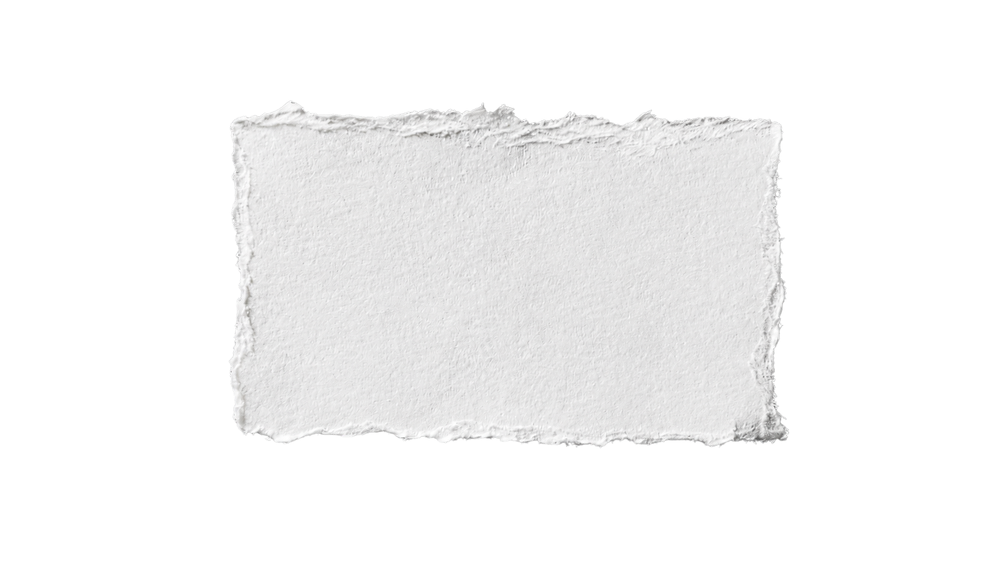
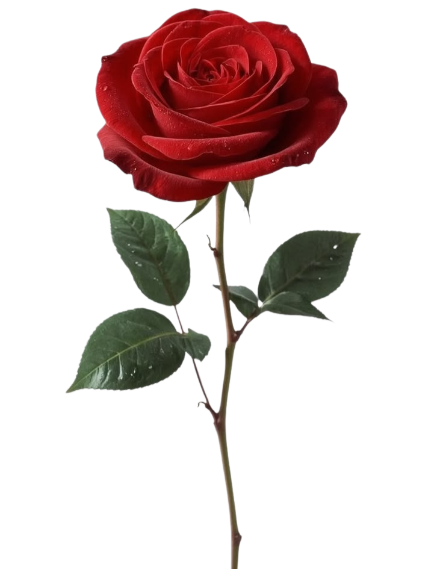

Birthday Album Terkunci
Masukkan kunci untuk membuka
Kunci tidak cocok. Coba lagi.
Klik di luar foto untuk kembali
Pilih sebuah kenangan...

Selamat Ulang Tahun Sonia
"Semoga setiap langkahmu ke depan selalu diiringi kebahagiaan, dan setiap cita-citamu perlahan terwujud serta dirimu dapat menemukan makna yang indah dalam kehidupan. Setiap foto di album ini adalah potongan kecil dari cerita hebatmu. Selamat menyaksikan."
Ketuk untuk membuka album
Happy Birthday
Sonia
Sonia